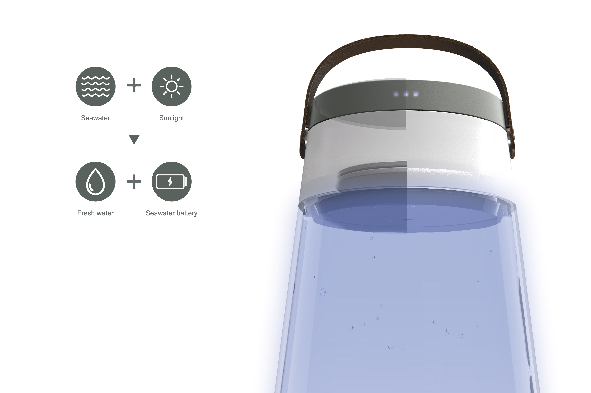
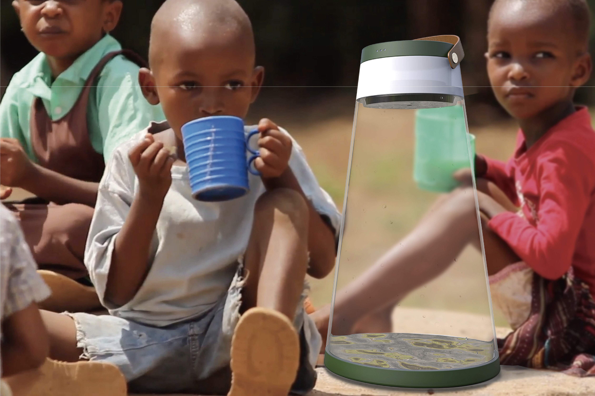
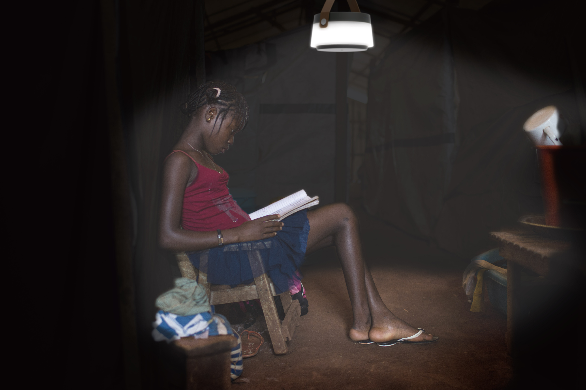

Aquasis
Seawater desalination water purifier for coastal and island communities — compact, field-serviceable, and designed for low-resource contexts.
≤ 15 min
Tool-less setup
~ 25 L/h
Freshwater output*
Service
Cartridge swap in 2 steps
Overview
Aquasis is a seawater desalination kit powered by a seawater battery. This product is designed for the people living near the ocean in countries with water shortage problems. When the seawater battery is charged with sunlight, the seawater is transformed into freshwater. Furthermore, the light in the cap is powered by the charged seawater battery and can be used as a light after dark.
Details
Role
Product Design · System Layout · UX
Core
RO membrane, pre/post filtration, manual/assist pump
Use
Priming → run → flush; clear status and error cues
Year
2024
Team
Engineers · Field partners · ID/UX
Gallery



← Back to Projects